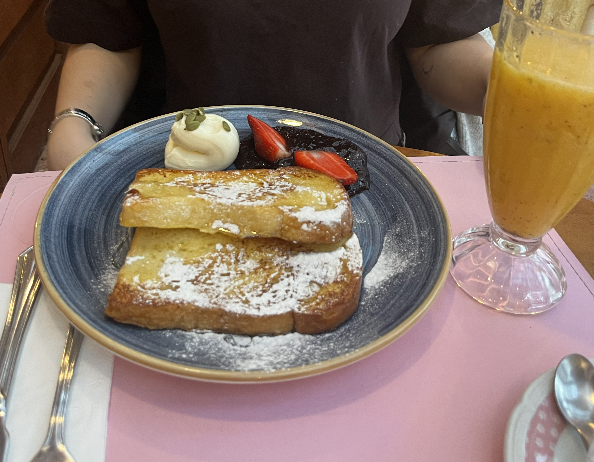
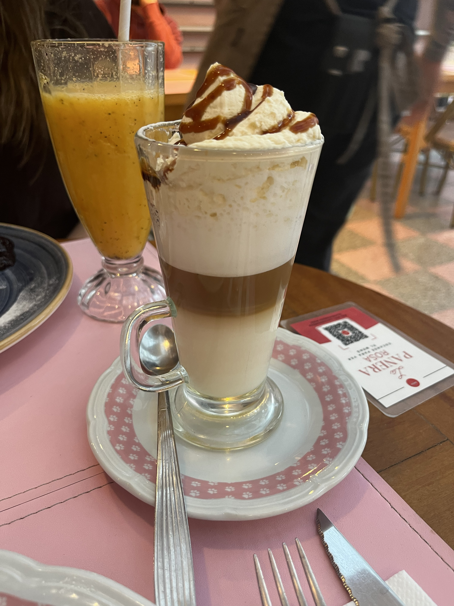
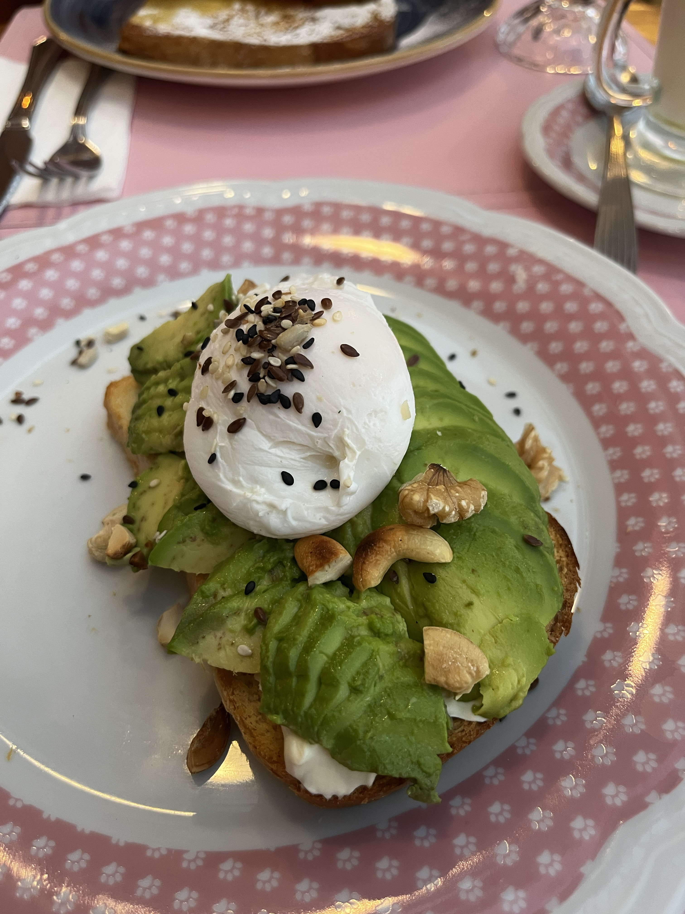

La Panera Rosa
Un espacio dulce y romántico donde la vajilla vintage y los tonos pastel marcan una identidad inconfundible. Su propuesta gastronómica abarca desde waffles recién horneados y crepes franceses hasta porciones abundantes de tortas artesanales elaboradas diariamente, ideales para maridar con milkshakes o cafés clásicos.


¿Por qué visitarlo?
Es la opción perfecta si buscás una merienda vistosa, porciones generosas para compartir y un espacio super fotogénico con estética pastel y amigable ambiente.
Ubicación: Jorge Luis Borges 1689, CABA, Argentina
Horario: Todos los días de 08:30 a 00:00 hs.
Medios de pago: Tarjetas de débito/crédito, efectivo y Mercado Pago